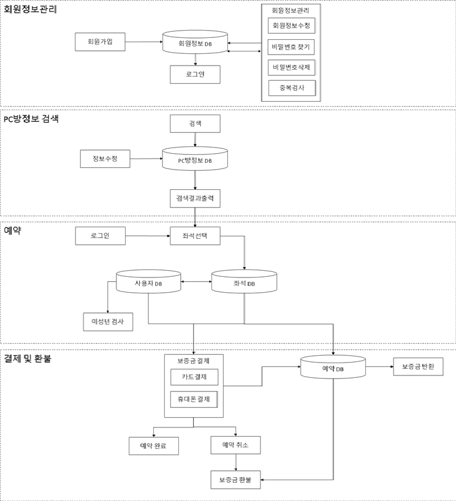

UML을 활용한 PC방 좌석 예약 시스템 설계
Design of PC Room Seat Reservation System Using UML
1. 소개
- PC방 실시간 잔여 좌석 안내 및 예약 시스템을 개발하기 위해 UML을 사용하여 설계
- 사용자 요구사항과 각종 Diagram을 작성함으로서 개발 과정에서 발생하는 개발자와 설계자, 사용자 간의 대화 불일치를 방지 및 목표 시스템의 목적과 기능을 명확히 함
2. 시스템 구조도

- 회원정보관리
- 사용자가 회원가입 시 회원 정보가 회원 정보 DB에 저장
- 이 DB를 통해 회원 정보관리 및 로그인을 진행
- PC방 정보 검색
- PC방 정보 DB를 이용하여 PC방을 검색
- 검색결과에 부합하는 PC방 정보 DB에서 찾아 출력
- 관리자는 PC방 정보 DB에 접근해 PC방 정보를 수정
- 예약
- 예약 시 선택한 좌석 정보를 좌석 DB에 저장
- 예약 시 사용자 DB 정보를 통해 미성년자인지 아닌지 검사
- 사용자 DB와 좌석 Db를 함께 예약 DB에 저장
- 사용자 DB정보와 좌석 DB정보를 통해 보증금 결제 진행
- 예약 DB
- 보증금을 결제후 결제 정보를 예약 DB에 저장
- 보증금 결제 후 예약 취소 시 예약 DB정보를 통해 보증금 환불
- 예약 DB을 통해 보증금 반환
3. 설계 및 구현
- Usecase Diagram

| Usecase ID | Usecase 내용 | 처리 흐름 |
| UD-01 | 회원가입을 한다 |
|
| UD-02 | 아이디, 비밀번호를 찾는다 |
|
| UD-03 | 비밀번호를 변경한다 |
|
| UD-04 | 회원정보를 삭제한다 |
|
| UD-05 | 로그인을 한다 |
|
| UD-06 | PC방 정보를 검색한다 |
|
| UD-07 | 조건 검색을 한다 |
|
| UD-08 | 좌석을 예약한다 |
|
| UD-09 | 결제를 한다 |
|
| UD-10 | 예약을 취소한다 |
|
| UD-11 | 환불을 받는다 |
|
| UD-12 | PC방 정보를 수정한다 |
|
| UD-13 | 등급제를 설정한다 |
|
| UD-14 | 사용금액 내역을 검색한다 |
|
5. 결과
결과